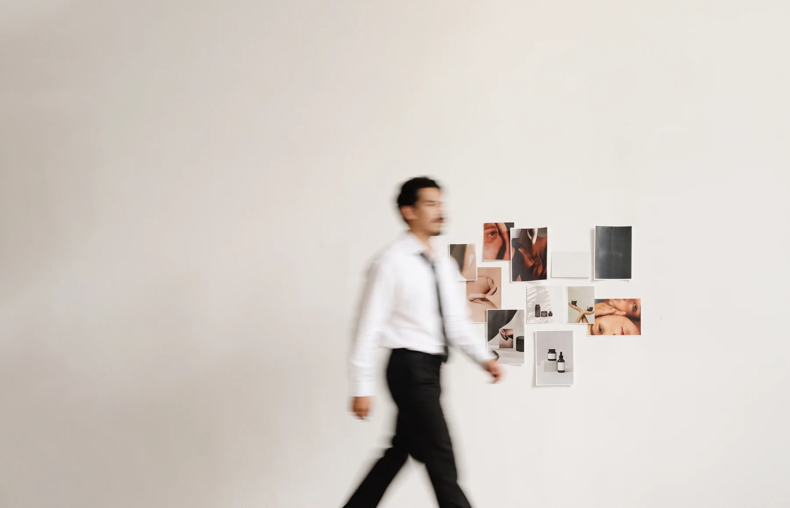

Selected work
Browse by discipline
Choose a category to update the projects below.
Work archive
| Client | Project | Discipline | Pieces | Formats | Year |
|---|
Nothing matches those filters. and try again.
Selected production systems
Campaigns built across formats, sizes and channels.
Production capabilities
What I can take from brief to shippable file.
About

Clients & projects
Contact
Open to freelance and full-time opportunities.